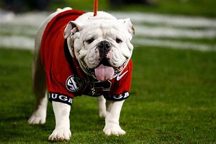

Georgia is the No. 1 ranked team in the country at this point, in part because of talented players such as Brock Bowers, Sedrick Van Pran and Malaki Starks. Those three players were all named to ESPNs Midseason All-American team.

The Bulldogs recent run of success can be attributed to a number of factors, including scheme, player development, and staff continuity. Essentially, though, Georgia has emerged as the sports new gold standard for two reasons. One, Smart recruits the best high school players in the country. (Or nearly the best—Alabama is still right there.) And two, he motivates those players to work as if no one actually thinks they are good.
©2023 bulldogs